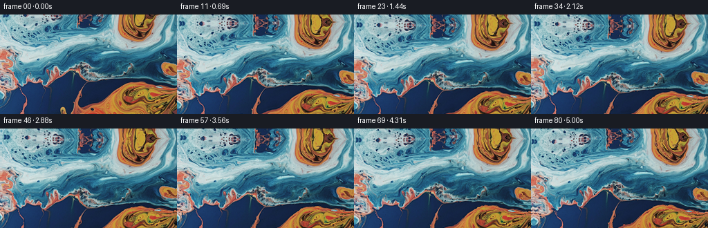
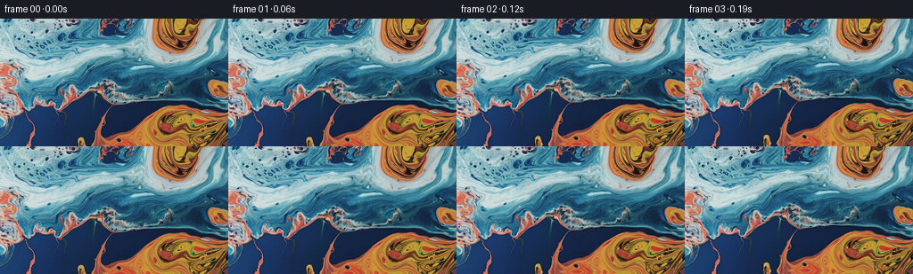
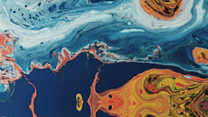
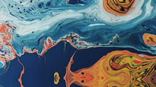
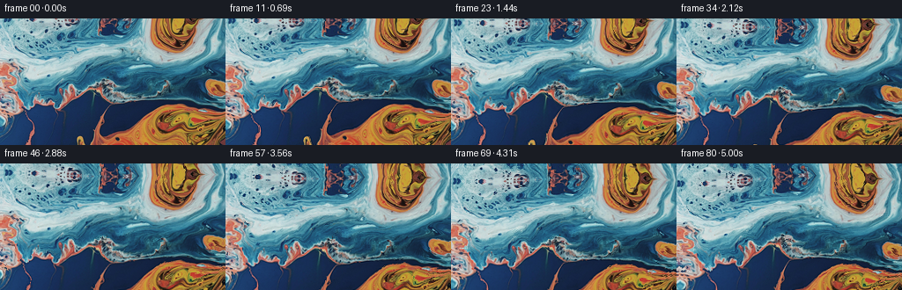
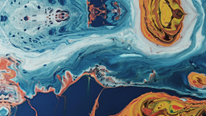

CODING AGENTS AS PIXEL WORLD MODELS
traex/DeepSeek-V4.1-Flash · 0004_s3
点击播放 · 原生 RGB 像素
逐轮保存的候选
回放视频、检查图与代码变化。
每份候选均可单独播放。实际图片检查记录在下方工具轨迹中。
候选 01播放与检查图
点击播放 · 原生 RGB 像素

展开代码变化
--- 上一保存版本
+++ 本次保存版本
@@ -0,0 +1,139 @@
+from pathlib import Path
+
+import cv2
+import numpy as np
+from PIL import Image
+
+import artifact_io
+
+
+CASE_DIR = Path(__file__).resolve().parent
+
+
+def smoothstep(value):
+ value = np.clip(value, 0.0, 1.0)
+ return value * value * (3.0 - 2.0 * value)
+
+
+def vortex_field(x, y, cx, cy, radius, strength):
+ dx = (x - cx) / radius
+ dy = (y - cy) / radius
+ falloff = np.exp(-0.5 * (dx * dx + dy * dy))
+ return -dy * strength * falloff, dx * strength * falloff
+
+
+def make_displacement(width, height, time):
+ x, y = np.meshgrid(
+ np.arange(width, dtype=np.float32),
+ np.arange(height, dtype=np.float32),
+ )
+ nx = (x - width * 0.5) / width
+ ny = (y - height * 0.5) / height
+
+ # The camera tilt is a smooth vertical translation. The liquid deformation
+ # supplies the changing parallax and keeps the shot from feeling like a pan.
+ tilt = smoothstep(time / 0.92) * 13.0
+ flow_gain = smoothstep(time / 0.20) * (0.72 + 0.28 * time)
+ dx = np.zeros_like(x)
+ dy = np.zeros_like(y)
+
+ vortices = (
+ (86.0 + 11.0 * np.sin(0.55 * time + 0.2),
+ 62.0 + 7.0 * np.cos(0.44 * time),
+ 72.0, 3.1 * np.sin(1.45 * time + 0.5)),
+ (188.0 + 9.0 * np.cos(0.42 * time + 0.8),
+ 104.0 + 8.0 * np.sin(0.51 * time + 1.1),
+ 55.0, -2.7 * np.sin(1.25 * time + 1.4)),
+ (41.0 + 7.0 * np.sin(0.38 * time + 1.8),
+ 112.0 + 6.0 * np.cos(0.48 * time + 0.4),
+ 48.0, 2.0 * np.sin(1.10 * time + 2.0)),
+ (218.0 + 8.0 * np.cos(0.36 * time + 2.2),
+ 35.0 + 6.0 * np.sin(0.46 * time + 1.7),
+ 47.0, 1.45 * np.sin(1.30 * time + 0.3)),
+ )
+ for cx, cy, radius, strength in vortices:
+ vx, vy = vortex_field(x, y, cx, cy, radius, strength)
+ dx += vx
+ dy += vy
+
+ # A low-frequency stream function adds broad, coherent stretching between
+ # the vortices rather than moving each colored region independently.
+ phases = (
+ (5.2 * nx + 3.7 * ny + 0.52 * time + 0.3, 1.00, 3.2),
+ (-3.9 * nx + 6.1 * ny - 0.38 * time + 1.7, 0.72, 4.1),
+ (8.4 * nx - 2.6 * ny + 0.61 * time + 2.4, 0.42, 5.6),
+ )
+ for phase, amplitude, frequency in phases:
+ dx += amplitude * np.cos(phase) * (frequency / 6.0)
+ dy += amplitude * np.sin(phase) * (frequency / 6.0)
+
+ # Fine capillary motion is concentrated on the bright cream boundaries.
+ gray = cv2.cvtColor(SOURCE, cv2.COLOR_RGB2GRAY).astype(np.float32) / 255.0
+ gx = cv2.Sobel(gray, cv2.CV_32F, 1, 0, ksize=3)
+ gy = cv2.Sobel(gray, cv2.CV_32F, 0, 1, ksize=3)
+ edge = cv2.GaussianBlur(np.hypot(gx, gy), (0, 0), 1.0)
+ edge = np.clip(edge / (np.percentile(edge, 96.0) + 1e-6), 0.0, 1.0)
+ normal = np.stack((gx, gy), axis=-1)
+ normal /= np.linalg.norm(normal, axis=-1, keepdims=True) + 1e-5
+ ripple = (
+ np.sin(2.0 * np.pi * (0.022 * x + 0.014 * y) - 2.1 * time)
+ + 0.45 * np.sin(2.0 * np.pi * (-0.010 * x + 0.027 * y) + 1.3 * time)
+ )
+ dx += normal[..., 0] * ripple * edge * 0.52
+ dy += normal[..., 1] * ripple * edge * 0.52
+
+ map_x = np.ascontiguousarray(x + dx * flow_gain, dtype=np.float32)
+ map_y = np.ascontiguousarray(y + tilt + dy * flow_gain, dtype=np.float32)
+ return map_x, map_y
+
+
+def render_frame(time):
+ if time == 0.0:
+ return SOURCE.copy()
+
+ sx, sy = make_displacement(WIDTH, HEIGHT, time)
+ warped = cv2.remap(
+ SOURCE,
+ sx,
+ sy,
+ interpolation=cv2.INTER_CUBIC,
+ borderMode=cv2.BORDER_REFLECT_101,
+ )
+ warped = warped.astype(np.float32)
+
+ # Recover a little of the micro-contrast softened by subpixel resampling.
+ softened = cv2.GaussianBlur(warped, (0, 0), 0.62)
+ warped = cv2.addWeighted(warped, 1.16, softened, -0.16, 0.0)
+
+ # A restrained moving sheen travels over the milky, reflective ridges.
+ lum = cv2.cvtColor(warped.astype(np.uint8), cv2.COLOR_RGB2GRAY).astype(np.float32) / 255.0
+ ridge = np.clip((lum - 0.56) / 0.32, 0.0, 1.0)
+ ridge = cv2.GaussianBlur(ridge, (0, 0), 1.2)
+ sheen = (
+ 0.017
+ * ridge
+ * np.sin(2.0 * np.pi * (0.013 * np.arange(WIDTH)[None, :] - 0.009 * np.arange(HEIGHT)[:, None]) - 1.55 * time)
+ * smoothstep(time / 0.35)
+ )
+ warped *= 1.0 + sheen[..., None]
+
+ return np.clip(warped, 0, 255).round().astype(np.uint8)
+
+
+SOURCE = np.asarray(Image.open(CASE_DIR / "first_frame.png").convert("RGB"))
+HEIGHT, WIDTH = SOURCE.shape[:2]
+assert (HEIGHT, WIDTH) == (144, 256)
+
+
+def main():
+ frame_count = 81
+ duration = (frame_count - 1) / 16.0
+ frames = np.empty((frame_count, HEIGHT, WIDTH, 3), dtype=np.uint8)
+ for index in range(frame_count):
+ frames[index] = render_frame(duration * index / (frame_count - 1))
+ artifact_io.save(frames, CASE_DIR)
+ print(f"saved {len(frames)} frames to {CASE_DIR}")
+
+
+if __name__ == "__main__":
+ main()
候选 02播放与检查图
候选 03播放与检查图
点击播放 · 原生 RGB 像素

展开代码变化
--- 上一保存版本
+++ 本次保存版本
@@ -30,9 +30,10 @@
nx = (x - width * 0.5) / width
ny = (y - height * 0.5) / height
- # The camera tilt is a smooth vertical translation. The liquid deformation
- # supplies the changing parallax and keeps the shot from feeling like a pan.
- tilt = smoothstep(time / 0.92) * 13.0
+ # Tilting down moves the viewed surface upward through the frame. The liquid
+ # deformation supplies the changing parallax and keeps this from reading as
+ # a simple image pan.
+ tilt = -smoothstep(time / 0.92) * 14.0
flow_gain = smoothstep(time / 0.20) * (0.72 + 0.28 * time)
dx = np.zeros_like(x)
dy = np.zeros_like(y)
候选 04播放与检查图

候选 05播放与检查图
点击播放 · 原生 RGB 像素

展开代码变化
--- 上一保存版本
+++ 本次保存版本
@@ -33,7 +33,7 @@
# Tilting down moves the viewed surface upward through the frame. The liquid
# deformation supplies the changing parallax and keeps this from reading as
# a simple image pan.
- tilt = -smoothstep(time / 0.92) * 14.0
+ tilt = -smoothstep(time / 4.7) * 18.0
flow_gain = smoothstep(time / 0.20) * (0.72 + 0.28 * time)
dx = np.zeros_like(x)
dy = np.zeros_like(y)
候选 06播放与检查图

可观测工具轨迹
实际执行的命令与返回图片。
命令 1exit 0
/bin/bash -c "pwd && rg --files -g 'prompt.txt' -g 'GENERATION_RULES.md' -g '"'!**/.git/**'"'"
命令 2exit 0
/bin/bash -c "ls -la && find . -maxdepth 2 -type f -not -path './.git/*' -printf '%p %s bytes\\n' | sort"
命令 3exit 0
/bin/bash -c 'git status --short --branch 2>/dev/null || true'
命令 4exit 0
/bin/bash -c 'cat prompt.txt'
命令 5exit 0
/bin/bash -c 'cat GENERATION_RULES.md'
命令 6exit 0
/bin/bash -c "cat task_spec.json && sed -n '1,240p' artifact_io.py"
命令 7exit 0
/bin/bash -c "command -v ffmpeg; command -v ffprobe; python - <<'PY' import importlib.util mods=['numpy','PIL','cv2','imageio','scipy','torch','diffusers','moviepy'] for m in mods: print(m, bool(importlib.util.find_spec(m))) PY"
命令 8exit 1
/bin/bash -c 'python generate.py'
命令 9exit 0
/bin/bash -c 'python generate.py'
命令 10exit 0
/bin/bash -c "python - <<'PY'
import cv2
print('cv2',cv2.__version__)
print('mp4v writer available')
PY
command -v ffmpeg || true
command -v ffprobe || true
du -sh frames pixels.npz index.html"命令 11exit 0
/bin/bash -c "python - <<'PY'
import numpy as np
from pathlib import Path
from PIL import Image
p=Path('frames')
a=np.stack([np.asarray(Image.open(p/f'{i:02d}.png')).astype(np.float32) for i in range(81)])
print('shape',a.shape,'dtype',a.dtype)
print('frame0 exact', np.array_equal(a[0],np.asarray(Image.open('first_frame.png').convert('RGB'))))
d=np.abs(np.diff(a,axis=0))
print('mean abs delta by frame:', np.round(d.mean((1,2,3)),3))
print('min/max/median consecutive mean:', d.mean((1,2,3)).min(), d.mean((1,2,3)).max(), np.median(d.mean((1,2,3))))
print('frame0-80 mean abs:', np.abs(a[-1]-a[0]).mean())
print('global mean RGB first/last:', a[0].mean((0,1)), a[-1].mean((0,1)))
PY"命令 12exit 0
/bin/bash -c 'python generate.py'
命令 13exit 0
/bin/bash -c 'python generate.py'
命令 14exit 0
/bin/bash -c "python - <<'PY'
import numpy as np
from pathlib import Path
from PIL import Image
p=Path('frames')
a=np.stack([np.asarray(Image.open(p/f'{i:02d}.png')) for i in range(81)])
src=np.asarray(Image.open('first_frame.png').convert('RGB'))
assert a.shape == (81,144,256,3) and a.dtype == np.uint8
assert np.array_equal(a[0],src)
d=np.abs(np.diff(a.astype(np.int16),axis=0))
stats=d.mean((1,2,3))
print('frame0 identical:', np.array_equal(a[0],src))
print('consecutive mean delta min/max/median:', round(float(stats.min()),3), round(float(stats.max()),3), round(float(np.median(stats)),3))
print('first-to-last mean delta:', round(float(np.abs(a[0].astype(np.int16)-a[-1].astype(np.int16)).mean()),3))
print('all finite/rgb:', bool(np.isfinite(a).all()), a.dtype, a.shape)
print('unique frame count:', len({x.tobytes() for x in a}))
PY"命令 15exit 0
/bin/bash -c "python - <<'PY'
from pathlib import Path
import numpy as np
from PIL import Image
p=Path('.')
expected=['generate.py','first_frame.png','prompt.txt','task_spec.json','pixels.npz','index.html','inspection.png','transition_check.png','frames']
for name in expected:
q=p/name
print(name, 'OK' if q.exists() else 'MISSING', q.stat().st_size if q.is_file() else '')
frames=sorted((p/'frames').glob('*.png'))
print('frame files:',len(frames),frames[0].name,frames[-1].name)
with np.load('pixels.npz') as data:
print('npz:',data['pixels'].shape,data['pixels'].dtype)
PY"命令 16exit 0
/bin/bash -c 'git status --short -- .'
视觉工具实际返回图片 1

视觉工具实际返回图片 2

视觉工具实际返回图片 3

视觉工具实际返回图片 4

视觉工具实际返回图片 5

视觉工具实际返回图片 6

视觉工具实际返回图片 7

视觉工具实际返回图片 8

视觉工具实际返回图片 9

保存候选 6 份；完成命令 16 次；可验证图片返回 9 张。原始 API 响应与完整日志保留在本地。